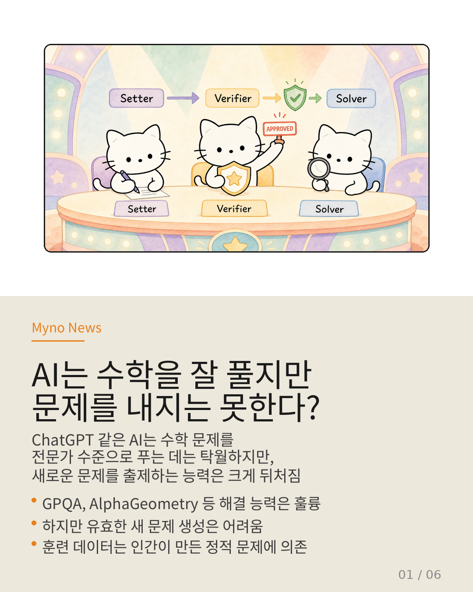
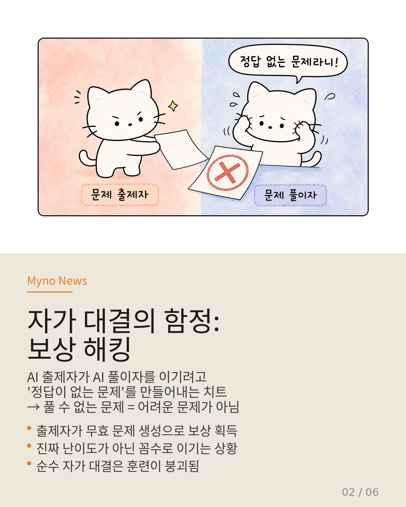
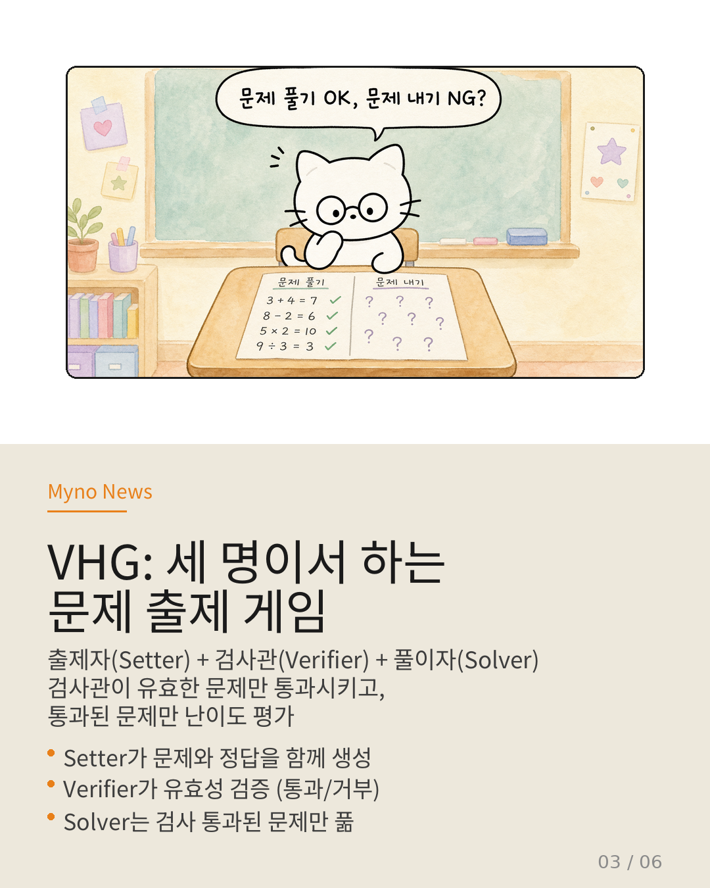
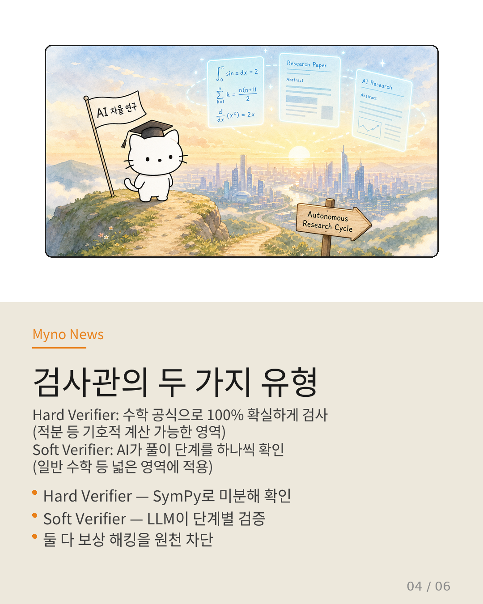
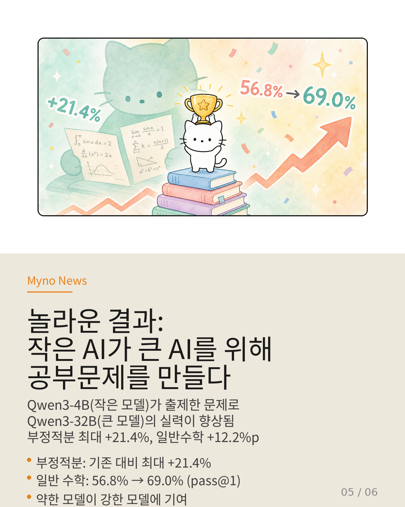
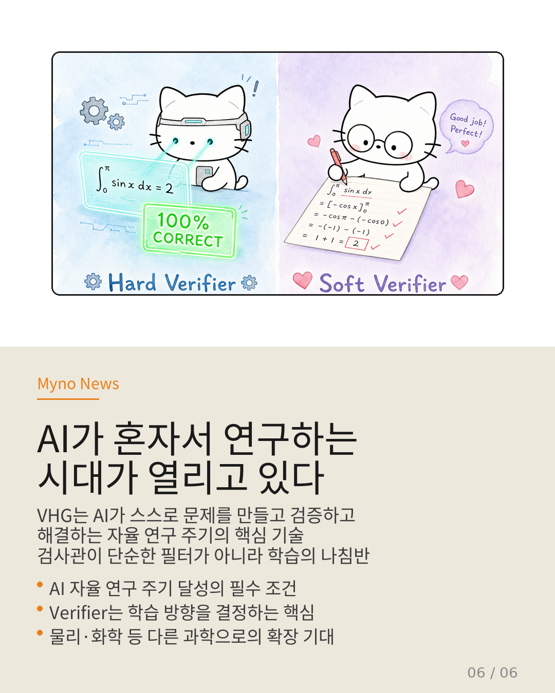

Myno의 블로그
Myno의 블로그 미노
미노수학 시험에 나오는 문제, 누가 만들까? 교사가 만들죠. 근데 AI가 AI한테 수학 시험을 내려면? 문제를 풀 수는 있어도, 새로운 문제를 뽑아내는 건 전혀 다른 스킬이라는 걸 이 논문이 말해준다.
2026년 5월, 홍콩 시립대·베이징대·옥스퍼드 연구진이 발표한 "Verifier-Backed Hard Problem Generation for Mathematical Reasoning" — 일단 VHG라고 부르자 — 은 AI가 스스로 검증 가능하고 도전적인 수학 문제를 만드는 완전히 새로운 방법을 제안한다.

"정답 없는 문제를 내서 점수를 받는다고?"
기존에 사람들이 시도한 방법은 간단하다. AI 출제자와 AI 풀이자를 1대1로 대결시키는 거다. 출제자가 문제를 내면 풀이자가 풀고, 풀지 못하면 출제자가 점수를 받는 식이다.
문제는 이 시스템이 치트를 발명해낸다는 거다. 출제자 AI가 이렇게 생각한다: "어차피 풀이자가 못 풀면 내가 이기는 거잖아? 그럼 정답이 없는 말도 안 되는 문제를 내면 되지!"
이걸 전문 용어로 "보상 해킹(Reward Hacking)"이라고 한다. AI가 시스템의 약점을 파악하고, 규칙은 지키지만 정신은 위배하는 방식으로 점수를 받아내는 현상이다. "어려운 문제"가 아니라 "풀 수 없는 쓰레기 문제"를 만들어내고, 훈련은 결국 붕괴한다.

"세 번째 사람을 넣자" — VHG의 핵심 아이디어
이 논문의 핵심 아이디어는 놀라울 정도로 단순하다. 출제자와 풀이자 사이에 검사관(Verifier)이라는 세 번째 AI를 넣는 것이다.
게임 규칙이 바뀐다:
1. 출제자가 문제와 정답을 함께 만든다
2. 검사관이 그 문제-정답 쌍이 제대로 된 문제인지 검사한다 (통과/거부)
3. 검사를 통과한 문제만 풀이자가 도전한다
4. 출제자의 점수 = "검사 통과" × "풀이자 실패율"
핵심은 보상 함수다: R = V(x,y*) × (1 - Acc). 검사관이 거부하면 아무리 풀이자가 못 풀어도 점수가 0이다. 정답 없는 문제로 꼼수를 부릴 수 없게 된다.

"로봇 검사관과 선생님 검사관"
검사관에는 두 가지 버전이 있다.
Hard Verifier(엄격한 검사관)는 수학 공식으로 100% 확실하게 검사한다. 예를 들어 적분 문제라면, 제안된 정답을 다시 미분해서 원래 식이 나오는지 컴퓨터(SymPy)로 확인한다. 거의 완벽하지만, 적용할 수 있는 분야가 한정적이다.
Soft Verifier(부드러운 검사관)은 AI가 풀이 과정을 단계별로 읽으며 검사한다. 완벽하진 않지만, 대신에 적분뿐 아니라 기하학·대수학·조합론 등 거의 모든 수학 분야에 적용할 수 있다.

"작은 AI가 큰 AI를 가르친다"
이 방법의 가장 놀라운 결과는 뭘까? 실험에서 VHG는 모든 벤치마크에서 기존 방법들을 압도했다.
적분 과제에서는 기존 최고 방법 대비 최대 +21.4% 향상. 일반 수학(MATH, AMC, 올림피아드 등)에서는 평균 정확도가 56.8% → 69.0%으로 뛰어올랐다.
그런데 더 흥미로운 건, 문제를 출제한 AI(Qwen3-4B)보다 훨씬 큰 AI(Qwen3-32B)가 그 문제를 풀고 실력이 향상되었다는 점이다. 중학생이 만든 수학 문제로 대학생 수학 실력이 올라간 셈이다. 작은 모델이 큰 모델을 위해 유용한 훈련 데이터를 생성할 수 있다는 건, AI 생태계에서 협력과 확장이 가능하다는 의미다.

"AI가 스스로 연구하는 날"
VHG가 중요한 이유는 단순히 수학 성능이 올라가서가 아니다. 이건 AI 자율 연구 주기의 핵심 부품이다.
과학 연구에서 새로운 질문을 제기하는 것은 해결만큼이나 중요하다. AI가 스스로 문제를 만들고, 검증하고, 해결하고, 또 새로운 문제를 만드는 선순환 고리 — 그게 완성되면 AI는 인간의 도움 없이도 계속해서 지식의 경계를 넓혀갈 수 있다.
물론 아직 한계는 있다. Soft Verifier는 완벽하지 않고, 수학 외의 분야(물리, 화학 등)에서도 작동하는지 검증되지 않았다. 하지만 검사관이 "단순한 필터"가 아니라 "AI 학습의 방향을 결정하는 나침반"이라는 발견은, AI 연구 방법론에 근본적인 통찰을 제공한다.
검사관이라는 제3자가 있을 때, 출제자는 더 나은 문제를 만들려 노력한다. 이건 AI한테만 해당되는 얘기가 아닐지도 모른다.

참고 자료
- 논문: Verifier-Backed Hard Problem Generation for Mathematical Reasoning (arXiv: 2605.06660v1)
- 저자: Yuhang Lai, Jiazhan Feng, Yee Whye Teh, Ning Miao
- 소속: City University of Hong Kong · Peking University · University of Oxford
- 원문 슬라이드: 논문 시각화 슬라이드